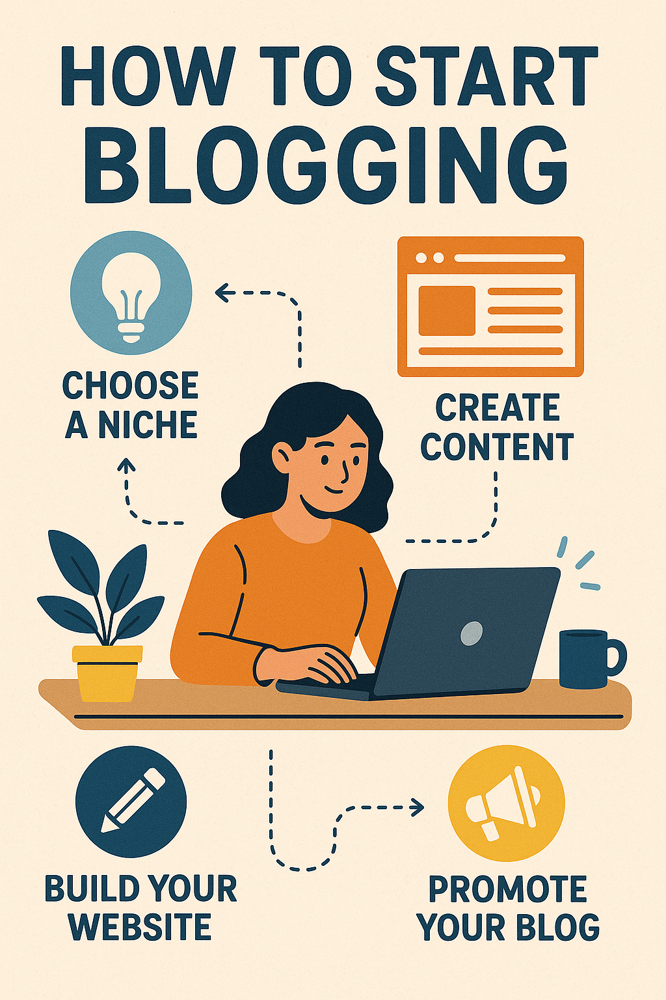

How to Start Blogging

Starting a blog can be both exciting and overwhelming. Here are some steps to guide you through the process:
- Choose a niche: Focus on a topic you’re passionate about.
- Select a platform: WordPress, Blogger, and Medium are popular choices.
- Pick a domain name: Make it relevant, catchy, and easy to remember.
- Design your blog: Choose a clean and professional theme.
- Create quality content: Write useful, interesting, and SEO-friendly posts.
- Promote your blog: Use social media, SEO, and guest blogging to gain traffic.
Remember, consistency and authenticity are key. Happy blogging!